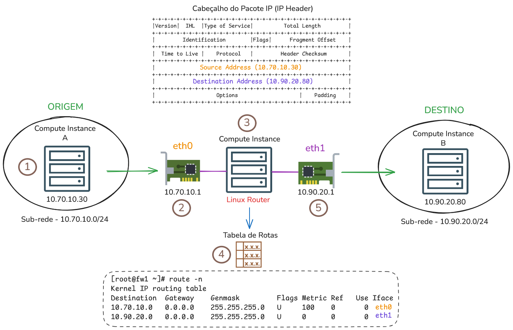
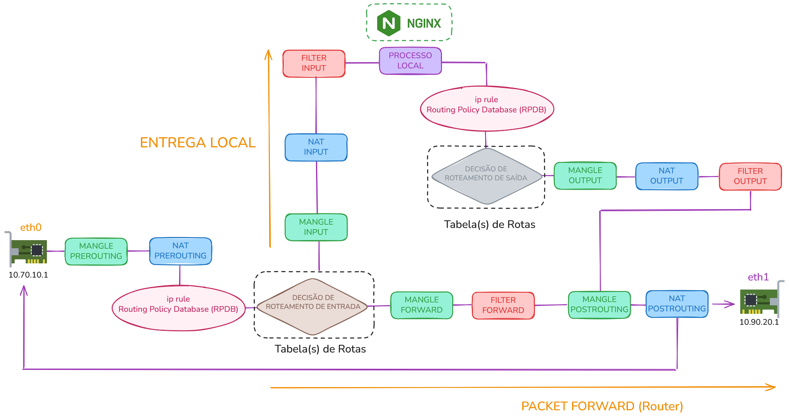
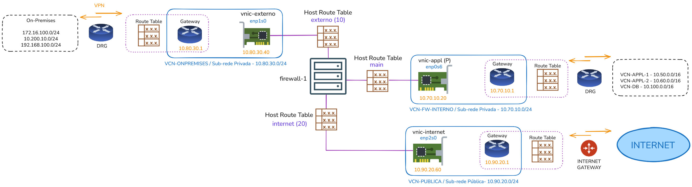
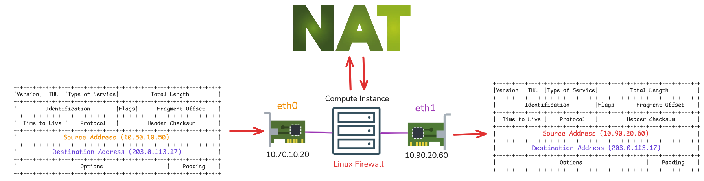

Roteamento por Destino
Por padrão, um roteador toma decisões de roteamento lendo o campo Destination Address do cabeçalho IP (e em teoria, mas não na prática, no campo TOS). Após obter o endereço IP presente no Destination Address, o próximo passo é consultar a tabela de rotas (route table), para determinar qual será a interface de rede de saída que será usada para encaminhar o pacote. Em outras palavras, a decisão de roteamento é baseada exclusivamente no endereço de destino, processo que também é chamado de Roteamento por Destino (destination-based routing).
Para facilitar, imagine que duas instâncias queiram se comunicar, cada uma em redes diferentes, e que exista um roteador Linux no meio interligando essas redes.

O fluxo de dados ocorre da seguinte maneira:
-
O Compute Instance A (10.70.10.30) - origem - quer comunicar-se com o Compute Instance B (10.90.20.80) - destino. Para isso, ele gera um pacote IP cujo cabeçalho contém os campos Source Address e Destination Address preenchidos com os respectivos endereços IP de origem e destino.
-
Compute Instance A (10.70.10.30) não sabe alcançar nenhum host da rede 10.90.20.0/24, mas conhece o roteador pois, ambos estão na mesma rede 10.70.10.0/24 (diretamente conectados). Assim, o pacote é enviado ao roteador Linux 10.70.10.1.
-
Após o pacote entrar pela interface de rede do roteador (eth0), inicia-se a decisão de roteamento que, basicamente, ocorre através da inspeção do campo Destination Address para determinar se o pacote deve ser entregue a um processo local (um daemon do próprio roteador) ou encaminhado para fora por outra interface de rede.
-
Neste caso, o roteador determina que o pacote deve ser encaminhado para fora porque o endereço IP 10.90.20.80 contido no campo Destination Address pertence a outro host e não a ele mesmo. Em seguida, é consultada a tabela de rotas para descobrir qual interface deve ser usada para enviar o pacote. Essa decisão é feita por um cálculo que compara o Destination Address com os prefixos da tabela de rotas (aplicando as máscaras) e seleciona a rota mais específica (longest-prefix match).
-
O pacote sai então pela interface de rede selecionada no processo de roteamento (eth1) para então poder alcançar o Compute Instance B (10.90.20.80).
Roteamento por destino não ocorre apenas em roteadores mas sim, em qualquer host da internet no qual utiliza TCP/IP para se comunicar. Todo host, antes de se comunicar com a rede, precisa consultar a sua própria tabela de rotas para determinar a interface de saída a ser usada, aplicando o mesmo princípio de comparação de prefixos (longest‑prefix match) ao campo Destination Address.
Um roteador difere de um host comum pela função de encaminhar pacotes (forward). Ele recebe pacotes em uma interface e os encaminha para outra interface distinta.
Para ativar a função de encaminhamento no Linux, tornar o host um roteador, basta habilitar o parâmetro do kernel ip_forward:
$ echo 1 > /proc/sys/net/ipv4/ip_forward
Se o roteador também encaminha pacotes IPv6, o parâmetro do kernel é outro:
$ echo 1 > /proc/sys/net/ipv6/conf/all/forwarding
Policy Routing
Policy Routing (ou Policy-Based Routing - PBR) é uma técnica de roteamento em que a decisão de roteamento pode ser feita a partir de outros critérios além do endereço de destino.
Muitas vezes, o Policy Routing é chamado de roteamento inteligente pois permite tomar decisões de roteamento com base não apenas no endereço de destino, mas também em outras propriedades dos pacotes, como endereço de origem, portas TCP/UDP, marcações em pacotes, campo TOS (Type of Service), interface de entrada, dados do pacote (payload), entre outros.
Normalmente, a configuração de Policy Routing divide‑se em duas etapas:
- Criar várias tabelas de rotas.
- Definir regras (policy rules) que escolhem, para cada pacote, qual tabela utilizar.
Múltiplas Tabelas de Rotas
A funcionalidade de Policy Routing, presente no Linux desde o Kernel 2.2, permite criar e configurar múltiplas tabelas de rotas. Ao contrário do roteamento tradicional, que usa apenas uma tabela de rotas, o Policy Routing possibilita ter várias tabelas de roteamento independentes, cada uma contendo as suas próprias regras de roteamento (rotas).
Por padrão, o Linux vem configurado com quatro tabelas de rotas definidas no arquivo /etc/iproute2/rt_tables:
$ cat /etc/iproute2/rt_tables
#
# reserved values
#
0 local
32766 main
32767 default
As tabelas são identificadas internamente pelo Kernel por IDs numéricos e, opcionalmente podem ser referenciadas por um respectivo nome. Para que um nome seja associado a um ID é preciso declará‑lo no arquivo /etc/iproute2/rt_tables pois, o Kernel lê esse arquivo na sua inicialização para reconhecer as tabelas nomeadas.
-
local (0)
- A tabela local contém rotas para endereços locais do sistema (local delivery), incluindo endereços broadcast, multicast e loopback.
- Tem prioridade alta na decisão de roteamento onde, o Kernel consulta para determinar se um pacote é destinado ao próprio host.
-
main (32766)
- É a tabela de roteamento padrão usada pelo Linux no qual contém todas as rotas que não estão relacionadas com Policy Routing.
-
default (32767)
- Tabela reservada para processametno posterior quando não houver nenhuma combinação de regra presente na tabela main.
Em relação às tabelas pré‑configuradas, a tabela main, é, na prática, a única que se manipula manualmente quando não se utiliza Policy Routing, as demais devem ser deixadas para o Kernel gerenciar.
Para visualizar o conteúdo de uma tabela é possível usar seu nome ou ID numérico:
$ ip route show table main
default via 10.90.20.254 dev eth1 proto kernel
10.70.10.0/24 dev eth0 proto kernel scope link src 10.70.10.1
10.90.20.0/24 dev eth1 proto kernel scope link src 10.90.20.1
O comando ip route show table main é equivalente ao comando route -n, apenas com formato de saída diferente:
$ route -n
Kernel IP routing table
Destination Gateway Genmask Flags Metric Ref Use Iface
0.0.0.0 10.90.20.254 0.0.0.0 UG 0 0 0 eth1
10.70.10.0 0.0.0.0 255.255.255.0 U 0 0 0 eth0
10.90.20.0 0.0.0.0 255.255.255.0 U 0 0 0 eth1
Para criar uma nova tabela, primeiro adicione seu ID e nome em /etc/iproute2/rt_tables:
$ echo '100 internet' >> /etc/iproute2/rt_tables
Após isso, já se torna possível adicionar e manipular rotas nesta tabela:
$ ip route add 198.51.100.0/24 dev eth0 table internet
ip rule
Além das tabelas, existe um conjunto de regras avaliadas antes da decisão de roteamento (isso faz parte do funcionamento padrão do Linux, independentemente do uso explícito de Policy Routing). Essas regras são manipuladas com o comando ip rule e, com base em critérios que você especifica, instruem o kernel sobre qual tabela de rotas deve ser consultada para efetuar a decisão de roteamento. Em resumo, as regras do ip rule são avaliadas antes das regras roteamento (tabela de rotas).
Por exemplo, a regra abaixo direciona a consulta para a tabela internet, que será usada para determinar o next‑hop do pacote:
$ ip rule add to 8.8.8.8 table internet prio 10
Cada regra tem uma priordade de processamento (prio 10) onde, regras de maior prioridade (valor mais baixo) são avaliadas primeiro e seguem em ordem crescente até a última regra. Ao encontrar uma regra que dê match, sua ação é aplicada (por exemplo, consultar a tabela “internet”) e as regras subsequentes não são avaliadas.
Por padrão, há as seguintes regras que fazem uso das tabelas local, main e default:
$ ip rule show
0: from all lookup local
32766: from all lookup main
32767: from all lookup default
Por exemplo, a tabela local tem maior prioridade e será avaliada por primeiro. Como já foi dito, ela contém ontém rotas para endereços locais do sistema. Isso significa que, todo pacote (from all) obrigatóriamente entra na tabela local.
$ ip route show table local
local 10.70.10.20 dev enp0s6 proto kernel scope host src 10.70.10.20
broadcast 10.70.10.255 dev enp0s6 proto kernel scope link src 10.70.10.20
local 10.80.30.40 dev enp1s0 proto kernel scope host src 10.80.30.40
broadcast 10.80.30.255 dev enp1s0 proto kernel scope link src 10.80.30.40
local 10.90.20.60 dev enp2s0 proto kernel scope host src 10.90.20.60
broadcast 10.90.20.255 dev enp2s0 proto kernel scope link src 10.90.20.60
local 127.0.0.0/8 dev lo proto kernel scope host src 127.0.0.1
local 127.0.0.1 dev lo proto kernel scope host src 127.0.0.1
broadcast 127.255.255.255 dev lo proto kernel scope link src 127.0.0.1
Netfilter
Além do ip rule e ip route, existem outros estágios avaliados por regras que processam os pacotes. Em conjunto com o comando ip, entram também as regras do Netfilter.
Netfilter é um framework do Kernel Linux que contém vários estágios de processamento que são consultados assim que um pacote entra pela interface de rede.
Os estágios do Netfilter são divididos em dois componentes principais:
tabelas
Existem três tabelas principais sendo que cada uma desempenha uma função específica:
-
FILTER
- Contém regras de filtragem de pacotes, usada para aceitar (ACCEPT), rejeitar (REJECT) ou descartar (DROP) tráfego.
-
NAT
- Contém regras de tradução de endereços/portas (DNAT, SNAT, MASQUERADE).
-
MANGLE
- Contém regras para alterações de cabeçalho e marcação de pacotes (p.ex. TOS/DSCP, TTL, marcação para routing/qos).
Para visualizar as regras de uma tabela específica, utilize o comando abaixo:
$ iptables -t filter -L
Chain INPUT (policy ACCEPT)
target prot opt source destination
Chain FORWARD (policy ACCEPT)
target prot opt source destination
Chain OUTPUT (policy ACCEPT)
target prot opt source destination
chains
Dentro de cada tabela existem os estágios de processamento ou chains que são:
-
INPUT
- Tratar pacotes destinados ao próprio host (local delivery).
- Ex.: um pacote direcionado a um processo
nginxpassa por este estágio.
-
FORWARD
- Processa pacotes que são encaminhados para fora do Linux, entram por uma interface e saem por outra.
-
OUTPUT
- Processa pacotes gerados localmente pelo host antes de serem enviados à rede.
- Ex.: após atender uma requisição, o processo
nginxgera um pacote de resposta que passa por essa chain antes de sair do host.
-
PREROUTING
- Processa pacotes assim que chegam, antes da decisão de roteamento.
-
POSTROUTING
- Processa pacotes após a decisão de roteamento.
Oficialmente, no contexto do Netfilter/iptables, o que eu chamo de “estágio” é chamado de chain, ou cadeia em português.
O termo chain faz sentido porque representa uma cadeia de regras, ou seja, é um conjunto de regras processadas sequencialmente, uma após a outra, afim de encontrar uma correspondência aos critérios que forão definidos. Quando uma correspondência é encontrada (deu match), a ação associada é executada sobre o pacote de dados.
Entretanto, nem todas as tabelas possuem as mesmas chain e, isso dependente da função que a tabela desempenha.
Por exemplo, a tabela FILTER possui as chains INPUT, FORWARD e OUTPUT, pois sua função principal é filtrar pacotes que entram, saem ou são encaminhados para fora. Nesse caso, não faria sentido existir uma chain PREROUTING na tabela FILTER, pois essa etapa não tem relação com filtragem de pacotes.
Para as demais tabelas, NAT possui os estágios PREROUTING, INPUT, OUTPUT e POSTROUTING. E a tabela MANGLE possui os estágios PREROUTING, INPUT, FORWARD, OUTPUT e POSTROUTING.
O último detalhe está relacionado à policy padrão da chain, que define a ação aplicada quando nenhuma regra da cadeia corresponde aos critérios do pacote analisado.
Essa policy pode representar ações como ACCEPT, REJECT ou DROP:
-
ACCEPT
- O pacote é aceito e o seu processamento continua.
-
REJECT
- O pacote é rejeitado e uma resposta é enviada ao remetente (por padrão: ICMP ICMP Type 3, Code 3 / Destination Unreachable: Port Unreachable).
-
DROP
- O pacote é descartado e nenhuma resposta é enviada ao rementente.
Por exemplo, para alterar a chain INPUT para DROP da tabela FILTER:
$ iptables -t filter -P INPUT DROP
Para criar uma regra que permita a entrada de pacotes destinados a um processo local escutando na porta 80/TCP, utilize o comando abaixo:
$ iptables -t filter -A INPUT -p tcp --dport 80 -j ACCEPT
Com essa regra, todo pacote que entra no host e tem como destino a porta 80/TCP será aceito. Qualquer outro pacote que não corresponda a essa regra será descartado pela policy padrão DROP que foi definida.
Fluxo dos Pacotes dentro da Caixa
Para entender melhor a relação entre os estágios de processamento apresentados, vamos utilizar o diagrama abaixo:

De acordo com o diagrama, a partir do momento em que o pacote entra pela interface de rede eth0, ele pode seguir dois caminhos possíveis. Para cada caminho, diferentes estágios de processamento são utilizados, conforme descrito abaixo:
Entrega Local (local delivery)
Pacotes destinados ao próprio host, para ser entregue a um processo local em execução, percorrem os seguintes estágios em ordem:
mangle / PREROUTING
Este é o primeiro estágio percorrido pelo pacote assim que ele entra pela interface de rede, antes de qualquer decisão de roteamento ser aplicada.
Nesta etapa, é possível “marcar pacotes”, ou seja, classificá-los para uso posterior em regras de roteamento, políticas de QoS ou controle de tráfego. Também é possível alterar campos específicos do cabeçalho IP, como TTL e TOS.
$ iptables -t mangle -A PREROUTING -i eth0 -p tcp --dport 80 -j MARK --set-mark 10
nat / PREROUTING
Primeira etapa que é possível aplicar regras para tradução de endereços (NAT). Na prática, este estágio é muito utilizada para regras de DNAT e REDIRECT no qual possibilita redirecionar pacotes para outro endereço IP ou porta antes da decisão de roteamento.
$ iptables -t nat -A PREROUTING -i eth0 -p tcp --dport 80 -j REDIRECT --to-ports 8080
Lembre-se de que qualquer alteração realizada no pacote durante este estágio pode influenciar a decisão de roteamento que será tomada posteriormente.
RPDB / ip rules
Esta é a primeira etapa relacionada ao Policy Routing, responsável por definir qual tabela de rotas será consultada com base em critérios que você específica.
Por exemplo, é possível escolher uma tabela de rotas específica para pacotes previamente marcados em mangle / PREROUTING com --set-mark 10 :
$ ip rule add fwmark 10 table internet priority 100
Decisão de Roteamento de entrada
Esta é a primeira decisão de roteamento do fluxo. Com base nas regras de Policy Routing, o Kernel define qual tabela de rotas será consultada para determinar qual será o next-hop do pacote.
Nesta etapa, com base nas regras de roteamento de uma tabela de rotas, será decidido se o pacote deve ser entregue para um processo local (nginx) ou, se ele deve ser encaminhado para fora do host (forward).
Como mencionado anteriormente, caso nenhuma regra específica de Policy Routing seja aplicada, a tabela main será consultada por padrão.
mangle / INPUT
Segunda etapa da tabela mangle, onde também é possível “marcar pacotes”, de forma semelhante ao que foi apresentado anteriormente em mangle / PREROUTING.
Um caso de uso prático para este estágio é contabilizar tráfego destinado a serviços locais.
nat / INPUT
Segunda etapa da tabela nat aplicada após a decisão de roteamento. Aqui é possível redirecionar pacotes para outra porta que são destinados para ser entregues para um processo local (nginx).
filter / INPUT
Esta é a principal etapa de filtragem para pacotes destinados ao próprio host. Nesta etapa, são aplicadas as regras de firewall responsáveis por permitir, rejeitar ou descartar o tráfego destinado a processos locais em execução.
$ iptables -t filter -A INPUT -p tcp --dport 80 -j DROP
Processo Local
Processo local em execução que receberá o pacote após ele ser aceito pelas etapas anteriores. Nesse momento, o Kernel entrega o pacote ao processo correto com base nas informações de camada 4, como protocolo e porta de destino. Por exemplo, se houver um processo ````nginx``` “escutando” na porta 80/TCP, o Kernel usará essa informação para encaminhar o pacote ao socket associado a esse serviço.
Depois que o processo local recebe o pacote e realiza o seu processamento, um novo pacote é gerado contendo a resposta que será enviada ao remetente.
RPDB / ip rules
As mesmas regras de Policy Routing definidas com ip rule, apresentadas na etapa 3, também são avaliadas neste momento para determinar qual tabela de rotas será utilizada. Porém, agora o processamento ocorre sobre um novo pacote: a resposta gerada pelo processo local, como o nginx, que será enviada de volta ao remetente.
Decisão de Roteamento de saída
A partir da resposta gerada pelo processo local e da tabela de rotas selecionada pelas regras de ip rule, o Kernel realiza uma nova decisão de roteamento para determinar por qual interface de rede o pacote de resposta será enviado (interface de saída).
mangle / OUTPUT
Terceira etapa da tabela mangle, porém, esta etapa é processada somente para pacotes gerados localmente pelo próprio host, antes que eles sejam enviados pela interface de rede de saída.
$ iptables -t mangle -A OUTPUT -p tcp --sport 80 -j MARK --set-mark 20
nat / OUTPUT
Terceira etapa da tabela nat, usada para aplicar regras de tradução de endereços ou portas em pacotes gerados localmente pelo próprio host.
filter / OUTPUT
Segunda etapa de filtragem de pacotes da tabela filter. Nesta etapa, podem ser criadas regras para permitir, rejeitar ou descartar tráfego. Porém, diferente da chain filter / INPUT, esta etapa é avaliada somente para pacotes gerados localmente pelo próprio host (resposta ou nova conexão de dentro para fora).
Por exemplo, você pode impedir que um usuário de dentro do host, abra uma conexão telnet para fora:
$ iptables -t filter -A OUTPUT -p tcp --dport 23 -j REJECT
mangle / POSTROUTING
Quarta e última etapa da tabela mangle. Ela é processada depois da decisão de roteamento (POSTROUTING), quando o Kernel já determinou a interface de rede de saída do pacote.
Por exemplo, é nesta etapa que é possível alterar o campo TTL do pacote IP:
$ iptables -t mangle -A POSTROUTING -o eth1 -j TTL --ttl-set 128
nat / POSTROUTING
Última etapa da tabela nat, processada após a decisão de roteamento (POSTROUTING) e pouco antes do pacote sair pela interface de rede.
Nesta etapa, é muito comum o uso de regras do tipo MASQUERADE, utilizadas para alterar o endereço IP de origem dos pacotes quando eles saem por uma interface de rede. Esse recurso é bastante usado quando máquinas de uma rede interna precisam acessar a Internet utilizando o endereço IP da interface WAN do roteador ou firewall.
$ iptables -t nat -A POSTROUTING -o eth1 -j MASQUERADE
Encaminhamento (forward)
Pacotes que são encaminhados pelo host para outra rede, entrando por uma interface de rede e saindo por outra, quando o sistema desempenha o papel de roteador ou firewall.
Como você verá, as etapas de processamento são diferentes. Neste fluxo, as chains INPUT e OUTPUT não são utilizadas, pois o pacote não é destinado ao próprio host nem foi gerado localmente por ele. Em vez disso, entra em cena a chain FORWARD , responsável por tratar pacotes que atravessam o host (entram por uma interface de rede e saem por outra).
Habilitar a função de encaminhamento exige alterar um parâmetro do Kernel Linux:
$ echo 1 > /proc/sys/net/ipv4/ip_forward
Ou, se o roteador também encaminha pacotes IPv6:
$ echo 1 > /proc/sys/net/ipv6/conf/all/forwarding
As tabelas e chains mangle / PREROUTING, nat / PREROUTING, mangle / POSTROUTING e nat / POSTROUTING possuem as mesmas funções e são processadas na mesma ordem.
A exceção está no processamento da RPDB / ip rules e na decisão de roteamento de entrada. Nesse ponto, o kernel identifica que o pacote não é destinado ao próprio host, mas sim a outra rede. Por isso, ele será encaminhado pelo host, utilizando uma interface de saída diferente daquela por onde entrou.
mangle / FORWARD
Etapa da tabela mangle aplicada à chain FORWARD, utilizada para pacotes que serão encaminhados pelo host, ou seja, pacotes que entram por uma interface de rede e saem por outra.
filter / FORWARD
Chamo esta etapa de “firewall do roteador”. Aqui se aplicam regras de filtragem para os pacotes que atravessam o host. Isto quer dizer que quando você quer filtrar “por dentro do firewall”, você deve usar esta tabela e chain.
Por exemplo, para descartar tráfego ICMP do tipo echo-request gerado pela rede interna e encaminhado para hosts na Internet, utilize a regra abaixo:
$ iptables -t filter -A FORWARD -i eth0 -o eth1 -p icmp --icmp-type echo-request -j DROP
OCI + Linux + Policy Routing
Toda essa base teórica sobre o fluxo de pacotes no Linux é essencial para implementar corretamente um firewall multi-VNIC ou multi-homed no OCI.
Policy Route aqui tem um único objetivo: definir qual gateway de sub-rede deve ser utilizado para cada fluxo de tráfego.
Independentemente do fabricante do seu firewall, seja ele um pfSense, Fortinet, Palo Alto, Check Point, entre outros, a lógica geral do processamento de pacotes e decisão de roteamento dentro da caixa é similar.
De acordo com a topologia de referência que está sendo estudada, o firewall Linux possui três VNICs, cada uma conectada a uma sub-rede distinta no OCI. Cada sub-rede possui seu próprio bloco CIDR e seu respectivo gateway, o que torna necessário compreender como o Linux toma decisões de roteamento quando há múltiplas interfaces de rede disponíveis.

vnic-appl (enp0s6)
Esta é primeira VNIC (primary) que é configurada no momento de criação da instância.
As primeiras regras de ip rule, instruem o Kernel Linux a consultar a tabela de rotas main para qualquer comunicação com a rede 10.70.0.0/16 (VCN-FIREWALL-INTERNO):
$ ip rule add to 10.70.0.0/16 table main prio 20
$ ip rule add from 10.70.0.0/16 table main prio 21
Além dessas configurações, essa VNIC também utiliza a tabela de rotas main, que é consultada para comunicação com as redes 10.50.0.0/16 (VCN-APPL-1), 10.60.0.0/16 (VCN-APPL-2) e 10.100.0.0/16 (VCN-DB).
Quem conhece e sabe alcançar essas redes é o gateway da sub-rede 10.70.10.1. Por isso, os pacotes que saem pela primary VNIC devem consultar a tabela de rotas main, onde existe uma rota padrão apontando para esse gateway.
As regras de ip rule abaixo instruem o Kernel Linux a consultar a tabela de rotas main sempre que o endereço de destino pertencer a uma das seguintes redes: 10.50.0.0/16 (VCN-APPL-1), 10.60.0.0/16 (VCN-APPL-2) e 10.100.0.0/16 (VCN-DB).
$ ip rule add to 10.50.0.0/16 table main prio 100
$ ip rule add to 10.60.0.0/16 table main prio 101
$ ip rule add to 10.100.0.0/16 table main prio 102
A interface primária será também utilizada para comunicação com a rede de destino 169.254.0.0/16. Essa é uma rede link-local interna da OCI, utilizada por diversos serviços da plataforma, como DNS, NTP, metadata service e conexões iSCSI.
$ ip rule add to 169.254.0.0/16 table main prio 10
Na configuração deste firewall, essa regra possui a prioridade mais alta no processo de decisão de roteamento.
vnic-externo (enp1s0)
Esta VNIC utiliza a tabela de rotas externo e é responsável pela comunicação com o ambiente on-premises, onde estão localizadas as redes 172.16.100.0/24, 10.200.10.0/24 e 192.168.100.0/24.
Após definir o ID numérico e o nome da tabela externo no arquivo /etc/iproute2/rt_tables, devem ser configuradas as rotas:
$ ip route add 10.80.0.0/16 dev enp1s0 table externo
$ ip route add default via 10.80.30.1 table externo
Para visualizar as rotas configuradas nessa tabela, utilize o comando abaixo:
$ ip route show table externo
default via 10.80.30.1 dev enp1s0
10.80.0.0/16 dev enp1s0 scope link
Após configurar a tabela de rotas, é necessário instruir o Kernel Linux a consultar a tabela externo sempre que a comunicação tiver origem ou destino para a rede 10.80.0.0/16 (VCN-FIREWALL-EXTERNO):
$ ip rule add to 10.80.0.0/16 table externo prio 30
$ ip rule add from 10.80.0.0/16 table externo prio 31
Também é necessário consultar a mesma tabela sempre que o endereço de destino for uma das redes on-premises:
$ ip rule add to 172.16.100.0/24 table externo prio 200
$ ip rule add to 10.200.10.0/24 table externo prio 201
$ ip rule add to 192.168.100.0/24 table externo prio 202
Como existe uma rota default na tabela externo apontando para o gateway 10.80.30.1, não é necessário cadastrar individualmente as redes on-premises nessa tabela.
Todo tráfego direcionado ao ambiente on-premises será encaminhado para o gateway da sub-rede 10.80.30.1. A partir daí, esse gateway saberá alcançar essas redes por meio do DRG.
vnic-internet (enp2s0)
A VNIC vnic-internet é utilizada para toda comunicação com destino à Internet.
Para que isso seja possível, além do endereço IP privado 10.90.20.60, essa VNIC também possui um endereço IP público associado, gerenciado pela camada de rede do OCI.
Isso significa que o IP público não aparece diretamente na interface de rede do Linux:
$ ip addr show dev enp2s0
4: enp2s0: <BROADCAST,MULTICAST,UP,LOWER_UP> mtu 1500 qdisc mq state UP group default qlen 1000
link/ether 02:00:17:06:63:9b brd ff:ff:ff:ff:ff:ff
inet 10.90.20.60/24 scope global enp2s0
valid_lft forever preferred_lft forever
Sempre que a instância acessa a Internet, o OCI se encarrega de fazer um NAT 1:1 deste endereço privado para o seu respectivo público associado à VNIC.
As rotas da tabela internet seguem o mesmo principio de configuração das demais, tendo sempre uma rota default que aponta para o gateway da sub-rede que agora é o endereço 10.90.20.1:
$ ip route show table internet
default via 10.90.20.1 dev enp2s0
10.90.0.0/16 dev enp2s0 scope link
Da mesma forma como ocorre nas configurações que utilizam a tabela externo, o Kernel Linux também precisa ser instruído a consultar a tabela internet sempre que a comunicação tiver origem ou destino para a rede 10.90.0.0/16:
$ ip rule add to 10.90.0.0/16 table internet prio 50
$ ip rule add from 10.90.0.0/16 table internet prio 51
Por fim, como essa VNIC é responsável pela comunicação com a Internet, e o objetivo é permitir que os recursos das VCNs VCN-APPL-1 e VCN-APPL-2 acessem a Internet por meio do firewall, é necessário instruir o Kernel Linux a consultar a tabela internet sempre que o destino do tráfego não corresponder a nenhuma das redes previamente configuradas:
$ ip rule add to 0.0.0.0/0 table internet prio 200
Observe que essa regra possui a menor prioridade dentro de toda a cadeia de regras. Isso é proposital, pois faz com que o Kernel Linux consulte a tabela internet somente por último, depois de avaliar as regras mais específicas.
Além das configurações realizadas com ip rule, há uma regra adicional necessária para que a comunicação com a Internet funcione.
Essa regra não faz parte do Policy Routing, mas sim da configuração de NAT, e deve ser criada por meio do comando iptables:
$ iptables -t nat -A POSTROUTING -o enp2s0 -j MASQUERADE
Esta é uma regra de NAT com a função de mascaramento (MASQUERADE). Ela é necessária porque, dentro do OCI, o tráfego com destino à Internet deve sair pelo endereço IP 10.90.20.60, associado à VNIC vnic-internet.
Neste caso, por exemplo, quando a comunicação é originada por um recurso da VCN-APPL-1 com destino à Internet, o pacote chega ao firewall e é processado pela cadeia de regras de ip rule.
Após a decisão de roteamento (POSTROUTING) indicar a saída pelo gateway 10.90.20.1, o pacote precisa ter seu endereço IP de origem alterado para o endereço IP da VNIC vnic-internet, ou seja, 10.90.20.60.

Essa tradução do endereço de origem é realizada pela regra de iptables apresentada acima.
Nota Final
Todas essas configurações de Policy Routing da topologia de referencia podem ser encontradas no script localizado em terraform/vm-firewall/scripts/rc-firewall.sh.
Durante a criação da infraestrutura com o comando terraform apply, o script rc-firewall.sh é enviado ao Object Storage. Posteriormente, durante o processo de boot, o firewall baixa esse script e o executa automaticamente.
As mesmas configurações são aplicadas aos dois firewalls da topologia de referência, firewall-1 e firewall-2. Ambos funcionam em modo ativo-ativo, por meio do Network Load Balance, que distribui o tráfego de rede entre eles utilizando o algoritmo de balanceamento 2-Tuple Hash.
Referências
-
Linux Advanced Routing & Traffic Control HOWTO
-
Linux netfilter Hacking HOWTO
-
IP Command Reference
-
Policy Routing With Linux - Online Edition